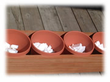
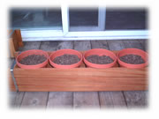

| ..*..*.. 2002年5月23日(木) 晴れ ..*..*..  さて、暖かくなってきたので、今年もハーブ栽培をはじめました。 土いじりは好きなんだけど、イヤなのは重いものを運ぶこと。園芸の宿命だから、ってあきらめてたのですけど、こんな風に、箱の中にプラスチックの植木鉢を入れると、全部を持たなくていいので楽です。去年、この方法を思い付いてから、今年も同じようにすることにしました。 そして、もっと軽くできないかな、と考えているところに、美千代さんに教えてもらった方法。こんな風に、底に発泡スチロールをちぎって入れるのです。  そうしたら、もっともっと軽くなって、持ち運びが楽で、土いじりがいっそう楽しくなったんですよ(^^)。それでこうやって土を入れて。 ちなみに去年植えたハーブは、ラベンダー、ミント、ロー ズマリー、オレガノ、バジル、パセリ、タイム 、キャットニップ。でも、残念ながら、ラベンダーとバジルは枯れてしまいました。残りは元気です。 そして今年は、チャイブ、フェンネル、バジル、ラベンダー、そしてセージ。お料理に使えるものばかりだったりして(^^;。ラベンダーは好きなので、何度失敗しても買ってしまいます。 そしてこんな風に、今は、うちのバルコニーで元気に育っています(^^) ..ところで、妹も同じようなことをしています。ハーブを始めたのも去年で、今年もやろうとしてるのよね。お互いはぜんぜん、ハーブの話なんてしないのに。考えることが似てるのかなぁ。 |